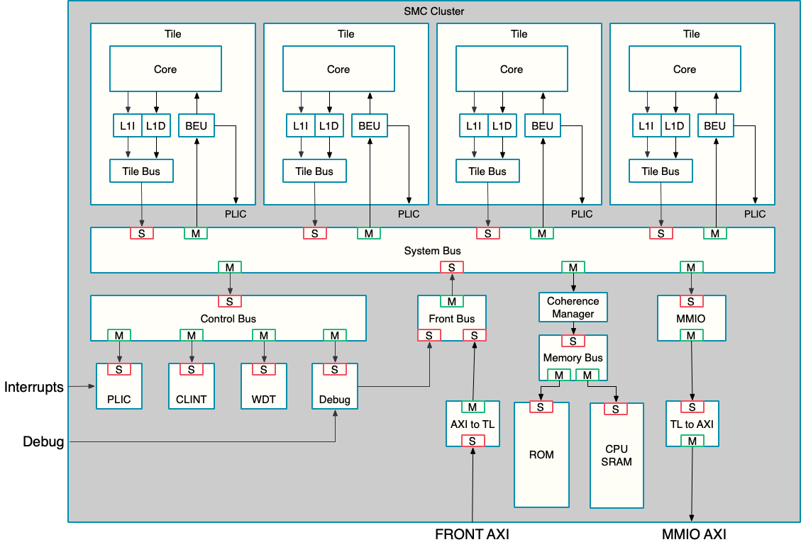

CPU & Memory System
This section describes the SMC’s CPU subsystem, which is based on the Rocket RV64GC RISC-V processor core (see: Rocket Chip). The cluster is generated using the Chipyard Rocket-chip generator and supports 4 processor cores, each with private L1 cache and access to a shared local SRAM.
Key features include:
-
4 Rocket CPU cores (RV64GC ISA, 56-bit physical addressing)
-
Core-local L1 instruction and data caches, each configurable in size and associativity
-
Shared local SRAM/Scratchpad and Boot ROM
-
Multi-core system management, deterministic performance for embedded management workloads
-
Full support for RISC-V privilege levels (Machine, Supervisor, User)
Figure 1 shows the CPU cluster, memory hierarchy, and fabric bridge.

Figures and tables: Figure 1.
1. Processor Core Overview
Table 1 summarizes the key features of the Rocket CPU core, and its cache hierarchy
| Attribute | Description |
|---|---|
Cores |
4, Rocket RV64GC |
ISA |
RV64GC (I, M, A, F, D, C extensions) |
Microarchitecture |
In-order, 5-stage pipeline |
Privilege Levels |
M/S/U |
Phys. Address |
56 bits |
Reset Vector |
Per-core, independently configurable (56b) |
Figures and tables: Table 1.
2. Cache and Memory Hierarchy
Table 2 lists the default memory sizes and their configurability.
| Component | Default Size | Notes | Configurability |
|---|---|---|---|
L1 I-Cache per core |
4 KiB (32 sets × 2 ways) |
Write-through, Parity |
icache_tag/data_cfg |
L1 D-Cache per core |
4 KiB (32 sets × 2 ways) |
Write-back, SECDED ECC |
dcache_tag/data_cfg |
Local SRAM/Scratchpad |
1 MiB (32 banks) |
Deterministic access, SECDED ECC, bank power gating |
scratch_ram_cfg |
Boot ROM |
128 KiB |
Read-only, stores boot firmware |
rom_cfg |
All memory components (SRAM, caches, ROM) are configurable via top-level parameters. The scratchpad SRAM allows deterministic accesses, independent of cache state, and supports per-bank sizing and power management.
Internally, the CPU cluster uses a TileLink bus to connect cores to the scratchpad, Boot ROM, PLIC, CLINT, and Bus Error Units. At the cluster boundary, TileLink is protocol-bridged to AXI4 and AXI4-Lite for integration with the SMC fabric (see Fabric ).
Figures and tables: Table 2.
3. Reset, Boot, and Initialization
Each CPU core supports an independent reset mechanism and a programmable reset vector, configured via rst_core_N_ni and reset_vector_N_i signals for cores N=0 to 3. The design provides separate reset controls for the uncore logic and debug subsystems, enabling flexible platform management and debug flows.
Individual core reset clears the core’s private L1 cache and TileLink client state without resetting the shared coherence manager. The current SMC Rocket integration provides no reset-aware coherence mechanism to drain outstanding transactions or preserve dirty cache data.
SRAM initialization is handled automatically by hardware on reset, ensuring memory consistency and error-free operation at startup; this feature can be disabled using smc_disable_sram_auto_init_i to support specialized or custom boot procedures. The completion of SRAM initialization is reported through the smc_init_mem_done_o status signal, allowing software to reliably detect when memory is ready for use.
4. Memory Repair
The SMC CPU subsystem includes Built-In Redundancy Analysis (BIRA) memory repair support to address manufacturing defects in SRAM arrays. Repair uses redundant memory elements configured by an external repair controller, applied during the boot sequence.
Memory repair executes automatically after eFuse sensing completes and before
MBIST operations. The external controller configures the redundant memory
elements and reports completion through mem_repair_done / mem_repair_success,
ensuring SRAM arrays are functional before the CPU cluster begins execution. The
SMC fuse map provides no repair-data storage; where that data lives is an
integration choice.
Control Mechanisms:
-
smc_fuse_sense_done_o: eFuse controller output indicating sensing completion. External DFT logic monitors this signal to trigger repair operations. -
skip_mem_repair_o: Reset unit output that bypasses repair when asserted, activating during FLR operations or when theBYPASS_SRAM_REPAIRstrap is set. -
BYPASS_SRAM_REPAIRstrap (GPIO pin 13): Hardware-level bypass control that bypasses repair logic when asserted, assuming SRAM arrays are defect-free.
Status Reporting:
Repair completion and success are reported through
DFX_CTRL_STATUS.STATUS_SMU at 0xC000_B800. The mem_repair_done bit
indicates completion, while mem_repair_success indicates successful repair.
The SMC ROM firmware monitors these bits during initialization to verify repair
completion before proceeding with boot operations.
Boot Sequence Integration:
Memory repair integrates into the boot sequence as follows: after power-on reset
deasserts and eFuse sensing begins, smc_fuse_sense_done_o assertion triggers
repair operations. Repair data is read from eFuse shadow registers and applied
to SRAM, with completion reported through DFT Control Status registers. MBIST
operations begin after repair completes (or is bypassed), and the CPU cluster
reset releases after both repair and MBIST complete. The repair process must
complete successfully before the CPU cluster can safely access SRAM arrays.
During FLR operations, repair is automatically bypassed via skip_mem_repair_o
to enable rapid reset sequences. Normal cold reset sequences always execute
repair unless explicitly bypassed via strap configuration.
6. Cluster Boundary Isolation
The cluster is reset independently of the surrounding SMC fabric.
If the cluster were reset while a transaction on one of its AXI ports
was still in flight, the fabric on the other side would be left
waiting on a response that never returns, hanging the bus, and could
sample boundary signals while they glitch through reset. To avoid this, each
AXI port is wrapped in an axi_isolate block that drains the outstanding
transactions and holds the boundary at safe values before the reset is allowed
to take effect.
Two instances wrap the AXI ports listed above, each sized for up to four outstanding transactions:
-
the L2 frontend slave port, which blocks new transactions rather than terminating them, and
-
the MMIO master port, which terminates new transactions presented while isolated with SLVERR responses to keep reset-time X values from propagating into the fabric.
The non-AXI status crossings (wb_pc_valid, wb_reg_pc, and the per-core
wdt_reset) are clamped to constants over the same window so they cannot leak
glitches either. The boundary also self-isolates on cold boot, releasing only
once SRAM initialization completes and the cores and uncore are out of reset.
6.1. Drain Handshake
Isolation is coordinated with the control logic
(smc_cpu_ctrl_wrap) through two signals:
-
isolate_req_i— asserted by the control logic whenever a software reset of the cluster is pending. The control logic withholds the reset itself until the cluster reports that it is safe to apply. -
drained_o— asserted once bothaxi_isolateinstances have drained and isolated their ports, telling the control logic the withheld reset may now be released.
6.2. Timeout Recovery
CPU_CTRL.RESET_TIMEOUT limits how long a software-requested reset waits for
the drain handshake. A timeout_value of zero disables the timer. When the
timer expires, timeout_mode=0 reports the timeout and continues to withhold
the reset. timeout_mode=1 forces the reset and flushes both AXI isolation
blocks.
reset_timeout remains high until the software reset request is removed,
including after a recovery flush completes. reset_applied is high once the
reset is applied by a completed drain or a force-mode timeout.
The flush clears outstanding-transaction records at the cluster boundary and discards late responses and write data until isolation is released. This lets the reset complete when the CPU cluster is unresponsive but the surrounding fabric remains operational.
|
The flush cannot cancel an address request or write-data beat while The flush clears only the CPU isolation blocks. It does not clear state elsewhere in the SMC fabric. The cluster reset may complete while another block remains unresponsive or holds a response, leaving that route or AXI ID blocked, so that block must be recovered separately or through the eventual cold reset. |
6.3. Reset-Domain Crossing
The flops driving the isolate-control logic are held by the cluster’s
uncore/core reset, while the flops inside axi_isolate are held by the Primary
Reset (see
Clock and Reset Management
). The
uncore/core reset is driven from two sources:
-
a Warm Reset from a watchdog timeout, which is asynchronous to the isolate logic, and
-
a CPU CSR write (the reset-control register in
smc_cpu_ctrl_wrap), which is synchronous.
Because the two sets of flops sit in different reset domains, the asynchronous
warm-reset path is a reset-domain crossing into axi_isolate. This is
acceptable: only the watchdog asserts the warm reset asynchronously, and a
watchdog timeout is followed by a cold reset, so the
brief crossing window has no functional consequence. The CSR path is
synchronous and crosses no domains.
7. Interrupt and Control Integration
All interrupt wiring—MMIO bases for PLIC, CLINT, watchdog, and bus-error
units; the authoritative cpu_interrupts_o map; PLIC/CLINT register
documentation; and BEU direct interrupt delivery—is documented in
Interrupts.
8. Watchdog Timer System
Each CPU core includes a dedicated watchdog timer (at 0xC000_0000 + N * 0x400), enabling per-core fault detection and recovery without impacting other cores. Base addresses and interrupt-related context for the WDT are summarized in Interrupts.
Timeouts are configurable to suit different workloads, and staged warnings (followed by reset) allow software intervention before hardware reset is triggered.
Watchdog monitoring can be disabled during debugging to prevent false triggers, supporting uninterrupted development and troubleshooting.
9. Advanced Bus Infrastructure Monitoring and Error Management
Per-core bus error monitors (at 0xC801_0000 + N * 0x1000) track AXI transactions, allowing the system to quickly detect and respond to infrastructure faults that could impact system management.
AXI error capture detects and logs decode, slave, and timeout errors so management software has clear insight into infrastructure health and can tailor its response.
Classifying errors lets software address each type effectively: decode errors may need reconfiguration; timeout errors may require isolating faults and recovery procedures.
Error address and transaction capture aid debugging, preserving context like addresses and data to support thorough fault analysis and recovery coordination.
10. Debug
Debugging is facilitated by a dedicated APB interface and JTAG, enabling per-core access to registers, memory, and both hardware and software breakpoints. These debug capabilities function independently of functional resets and allow override of reset vectors to support firmware development and diagnostics.
11. Detailed Register Map
CPU Control Address Map
Per-core reset control and status, reset timing, chip configuration, mailbox, and boot-ROM stub registers for the SMC CPU cluster.
Register Arrays:
- RESET_VECTOR[4]: 4 registers, base 0x0, stride 0x8
- SCRATCH[16]: 16 registers, base 0x80, stride 0x8
- WB_PC_CORE0[8]: 8 registers, base 0x100, stride 0x8
- WB_PC_CORE1[8]: 8 registers, base 0x140, stride 0x8
- WB_PC_CORE2[8]: 8 registers, base 0x180, stride 0x8
- WB_PC_CORE3[8]: 8 registers, base 0x1C0, stride 0x8
- MUTEX[4]: 4 registers, base 0x240, stride 0x8
- SEMA[4]: 4 registers, base 0x260, stride 0x8
- DUMMY_ROM_NULL[4]: 4 registers, base 0x2A0, stride 0x8
Register List:
| Address | Name | Access | Description |
|---|---|---|---|
| 0x0 - 0x18 | RESET_VECTOR[4] | RW | - |
| 0x20 | RESET_CTRL | RW | - |
| 0x28 | CORE_RESET_PULSE_COUNT | RW | - |
| 0x30 | RESET_TIMEOUT | RW | - |
| 0x40 | REFERENCE_COUNTER | RW | - |
| 0x50 | WDT_TIMEOUT | RW | - |
| 0x58 | WDT_TIMEOUT_RESET | RW | - |
| 0x60 | TEST_CTRL | R | - |
| 0x80 - 0xF8 | SCRATCH[16] | RW | - |
| 0x100 - 0x138 | WB_PC_CORE0[8] | R | - |
| 0x140 - 0x178 | WB_PC_CORE1[8] | R | - |
| 0x180 - 0x1B8 | WB_PC_CORE2[8] | R | - |
| 0x1C0 - 0x1F8 | WB_PC_CORE3[8] | R | - |
| 0x200 | SMC_ATTRIBUTES | R | - |
| 0x240 - 0x258 | MUTEX[4] | RW | - |
| 0x260 - 0x278 | SEMA[4] | RW | - |
| 0x280 | DUMMY_ROM_0 | RW | - |
| 0x288 | DUMMY_ROM_1 | RW | - |
| 0x290 | DUMMY_ROM_2 | RW | - |
| 0x298 | DUMMY_ROM_3 | RW | - |
| 0x2A0 - 0x2B8 | DUMMY_ROM_NULL[4] | RW | - |
Register Details:
RESET_VECTOR[4]
| Bits | Field | Access | Reset | Description |
|---|---|---|---|---|
| 63:56 | Reserved | - | - | Reserved |
| 55:0 | vector | RW | 0xC0040000 | - |
RESET_CTRL
| Bits | Field | Access | Reset | Description |
|---|---|---|---|---|
| 63:25 | Reserved | - | - | Reserved |
| 24 | debug_reset_n_n0_scan | RW | 0x0 | Debug Module Reset, active low |
| 23:9 | Reserved | - | - | Reserved |
| 8 | uncore_reset_n_n0_scan | RW | 0x1 | Cluster Uncore Reset, active low. Writing this register will only reset the uncore portion in the chipyard cluster. WARNING: using this can cause any outstanding axi requests to and from the cluster to cause timeouts/exceptions. |
| 7 | core3_reset_pulse_start_n0_scan | RW | 0x0 | Writing a 1 to this register triggers a core reset pulse, the duration of which is set by CORE_RESET_PULSE_COUNT. This pulse is ANDed with core_reset_n[3] so a 0 in core_reset_n[3] will override the pulse. |
| 6 | core2_reset_pulse_start_n0_scan | RW | 0x0 | Writing a 1 to this register triggers a core reset pulse, the duration of which is set by CORE_RESET_PULSE_COUNT. This pulse is ANDed with core_reset_n[2] so a 0 in core_reset_n[2] will override the pulse. |
| 5 | core1_reset_pulse_start_n0_scan | RW | 0x0 | Writing a 1 to this register triggers a core reset pulse, the duration of which is set by CORE_RESET_PULSE_COUNT. This pulse is ANDed with core_reset_n[1] so a 0 in core_reset_n[1] will override the pulse. |
| 4 | core0_reset_pulse_start_n0_scan | RW | 0x0 | Writing a 1 to this register triggers a core reset pulse, the duration of which is set by CORE_RESET_PULSE_COUNT. This pulse is ANDed with core_reset_n[0] so a 0 in core_reset_n[0] will override the pulse. |
| 3 | core3_reset_n_n0_scan | RW | 0x1 | Reset control for the CPU, active low. |
| 2 | core2_reset_n_n0_scan | RW | 0x1 | Reset control for the CPU, active low. |
| 1 | core1_reset_n_n0_scan | RW | 0x1 | Reset control for the CPU, active low. |
| 0 | core0_reset_n_n0_scan | RW | 0x1 | Reset control for the CPU, active low. |
CORE_RESET_PULSE_COUNT
| Bits | Field | Access | Reset | Description |
|---|---|---|---|---|
| 63:36 | Reserved | - | - | Reserved |
| 35:32 | core_resets_done | R | 0xF | Logic low while performing core reset, logic high otherwise. |
| 31:16 | post_reset_count | RW | 0x10 | Core reset pulse count post-reset. The duration of the pulse is the set value + 1. |
| 15:0 | pre_reset_count | RW | 0x8 | Core reset pulse count pre-reset. The duration of the pulse is the set value + 1. |
RESET_TIMEOUT
| Bits | Field | Access | Reset | Description |
|---|---|---|---|---|
| 63:37 | Reserved | - | - | Reserved |
| 36 | reset_timeout | R | 0x0 | Status for the active software reset request: high after the request exceeds timeout_value and remains high until the request is deasserted. Set in both modes. |
| 35:33 | Reserved | - | - | Reserved |
| 32 | reset_applied | R | 0x0 | Live status: high while a requested software reset is applied at the cluster, either after drain completes or after a force-mode timeout. |
| 31:17 | Reserved | - | - | Reserved |
| 16 | timeout_mode | RW | 0x0 | Timeout mode: 0 = give up and report error (stay withheld, do not apply); 1 = force the reset on timeout. |
| 15:0 | timeout_value | RW | 0x0 | Cycles (clk_smc) a software reset may stay pending (withheld, waiting for drain) before timeout. 0 = disabled, wait indefinitely. |
REFERENCE_COUNTER
| Bits | Field | Access | Reset | Description |
|---|---|---|---|---|
| 63:0 | rc | RW | 0x0 | Reference counter for the CPU |
WDT_TIMEOUT
| Bits | Field | Access | Reset | Description |
|---|---|---|---|---|
| 31:0 | data | RW | 0x4000 | Cycle count value that 2nd stage watchdog timer timeout should occur at. Defaults to 16384 cycles |
WDT_TIMEOUT_RESET
| Bits | Field | Access | Reset | Description |
|---|---|---|---|---|
| 31:4 | Reserved | - | - | Reserved |
| 3 | reset_cycle_count_3 | RW | 0x0 | Reset current cycle count value in 2nd stage watchdog timer |
| 2 | reset_cycle_count_2 | RW | 0x0 | Reset current cycle count value in 2nd stage watchdog timer |
| 1 | reset_cycle_count_1 | RW | 0x0 | Reset current cycle count value in 2nd stage watchdog timer |
| 0 | reset_cycle_count_0 | RW | 0x0 | Reset current cycle count value in 2nd stage watchdog timer |
TEST_CTRL
| Bits | Field | Access | Reset | Description |
|---|---|---|---|---|
| 63:32 | Reserved | - | - | Reserved |
| 31:0 | data | R | 0x0 | Test control register for the CPU |
SCRATCH[16]
| Bits | Field | Access | Reset | Description |
|---|---|---|---|---|
| 63:32 | Reserved | - | - | Reserved |
| 31:0 | data | RW | 0x0 | Scratch register for the CPU |
WB_PC_CORE0[8]
| Bits | Field | Access | Reset | Description |
|---|---|---|---|---|
| 63:58 | Reserved | - | - | Reserved |
| 57:0 | pc | R | 0x0 | Writeback PC value |
WB_PC_CORE1[8]
| Bits | Field | Access | Reset | Description |
|---|---|---|---|---|
| 63:58 | Reserved | - | - | Reserved |
| 57:0 | pc | R | 0x0 | Writeback PC value |
WB_PC_CORE2[8]
| Bits | Field | Access | Reset | Description |
|---|---|---|---|---|
| 63:58 | Reserved | - | - | Reserved |
| 57:0 | pc | R | 0x0 | Writeback PC value |
WB_PC_CORE3[8]
| Bits | Field | Access | Reset | Description |
|---|---|---|---|---|
| 63:58 | Reserved | - | - | Reserved |
| 57:0 | pc | R | 0x0 | Writeback PC value |
SMC_ATTRIBUTES
| Bits | Field | Access | Reset | Description |
|---|---|---|---|---|
| 63:46 | Reserved | - | - | Reserved |
| 45:40 | num_mailboxes | R | - | - |
| 39:36 | mailbox_depth | R | - | - |
| 35:33 | num_cores | R | - | - |
| 32 | no_output_remap | R | - | - |
| 31:26 | sram_size | R | - | Total SRAM size is 2 ^ value bytes |
| 25:17 | num_cpu_interrupts | R | - | - |
| 16:8 | num_ext_interrupts | R | - | - |
| 7:1 | Reserved | - | - | Reserved |
| 0 | chiplet_is_primary | R | - | Indicates if this chiplet is primary (1) or secondary (0). Driven by strap. |
MUTEX[4]
| Bits | Field | Access | Reset | Description |
|---|---|---|---|---|
| 63:1 | Reserved | - | - | Reserved |
| 0 | mutex | RW | 0x1 | HW mutex. Reads will attempt to acquire mutex, 1 on success. If the mutex is already acquired, the read will return 0. To release the mutex, write any value to the register. |
SEMA[4]
| Bits | Field | Access | Reset | Description |
|---|---|---|---|---|
| 63:16 | Reserved | - | - | Reserved |
| 15:0 | sema | RW | 0x0 | 16-bit semaphore value to inc/dec. Writing to this register will inc/dec the semaphore value. The written value is treated as a signed number using 2s compliment. |
DUMMY_ROM_0
| Bits | Field | Access | Reset | Description |
|---|---|---|---|---|
| 63:0 | dummy_rom_word_0 | RW | 0x145051300000517 | Word 0 of WFI loop |
DUMMY_ROM_1
| Bits | Field | Access | Reset | Description |
|---|---|---|---|---|
| 63:0 | dummy_rom_word_1 | RW | 0xFFF0069330551073 | Word 1 of WFI loop |
DUMMY_ROM_2
| Bits | Field | Access | Reset | Description |
|---|---|---|---|---|
| 63:0 | dummy_rom_word_2 | RW | 0x105000733046B073 | Word 2 of WFI loop |
DUMMY_ROM_3
| Bits | Field | Access | Reset | Description |
|---|---|---|---|---|
| 63:0 | dummy_rom_word_3 | RW | 0xFFDFF06F | Word 3 of WFI loop |
DUMMY_ROM_NULL[4]
| Bits | Field | Access | Reset | Description |
|---|---|---|---|---|
| 63:0 | dummy_rom_null | RW | 0x0 | Cache line size is 64 bytes so want to ensure no random data is read when reading dummy rom |
CLINT Address Map
Core-Local Interruptor: software-interrupt, timer-compare, and machine-time registers.
Register Arrays:
- MSIP[4]: 4 registers, base 0x0, stride 0x4
- MTIMECMP[4]: 4 registers, base 0x4000, stride 0x8
Register List:
| Address | Name | Access | Description |
|---|---|---|---|
| 0x0 - 0xC | MSIP[4] | RW | - |
| 0x4000 - 0x4018 | MTIMECMP[4] | RW | - |
| 0xBFF8 | MTIME | RW | - |
Register Details:
MSIP[4]
| Bits | Field | Access | Reset | Description |
|---|---|---|---|---|
| 31:1 | rsvd0 | R | 0x0 | Reserved |
| 0 | value | RW | 0x0 | MSIP bit for core |
MTIMECMP[4]
| Bits | Field | Access | Reset | Description |
|---|---|---|---|---|
| 63:0 | count | RW | - | Cycle count value to be used for comparison, triggers interrupt once count value matches this |
MTIME
| Bits | Field | Access | Reset | Description |
|---|---|---|---|---|
| 63:0 | count | RW | - | Cycle count (time) value |
Debug Module Hart Interface
Memory region through which a hart in Debug Mode exchanges state with the Debug Module: handshake mailboxes, generated instructions, program buffer, data registers, per-hart flags and the debug ROM. The debugger-facing Debug Module registers (dmcontrol, dmstatus, abstractcs, sbcs, ...) are reached over the Debug Module Interface and do not appear in this map.
Register Arrays:
- ABSTRACT[5]: 5 registers, base 0x328, stride 0x4
- PROGBUF[16]: 16 registers, base 0x33C, stride 0x4
- DATA[4]: 4 registers, base 0x380, stride 0x4
- ROM[26]: 26 registers, base 0x800, stride 0x4
Register List:
| Address | Name | Access | Description |
|---|---|---|---|
| 0x100 | HALTED | W | - |
| 0x104 | GOING | W | - |
| 0x108 | RESUMING | W | - |
| 0x10C | EXCEPTION | W | - |
| 0x300 | WHERETO | R | - |
| 0x328 - 0x338 | ABSTRACT[5] | R | - |
| 0x33C - 0x378 | PROGBUF[16] | RW | - |
| 0x37C | IMPEBREAK | R | - |
| 0x380 - 0x38C | DATA[4] | RW | - |
| 0x400 | FLAGS | R | One flag byte per hart, at byte offset equal to the hart ID. Bit 0 is go (execute the command at WHERETO); bit 1 is resume (leave Debug Mode). Bits 7:2 read as 0. |
| 0x800 - 0x864 | ROM[26] | R | - |
Register Details:
HALTED
| Bits | Field | Access | Reset | Description |
|---|---|---|---|---|
| 31:10 | Reserved | - | - | Reserved |
| 9:0 | hartid | W | - | Debug ROM causes the hart to write its hart ID here when it is in Debug Mode. |
GOING
| Bits | Field | Access | Reset | Description |
|---|---|---|---|---|
| 31:10 | Reserved | - | - | Reserved |
| 9:0 | hartid | W | - | Debug ROM causes the hart to write 0 here when it begins executing Debug Mode instructions. |
RESUMING
| Bits | Field | Access | Reset | Description |
|---|---|---|---|---|
| 31:10 | Reserved | - | - | Reserved |
| 9:0 | hartid | W | - | Debug ROM causes the hart to write its hart ID here when it leaves Debug Mode. |
EXCEPTION
| Bits | Field | Access | Reset | Description |
|---|---|---|---|---|
| 31:10 | Reserved | - | - | Reserved |
| 9:0 | hartid | W | - | Debug ROM causes the hart to write 0 here if it takes an exception in Debug Mode. |
WHERETO
| Bits | Field | Access | Reset | Description |
|---|---|---|---|---|
| 31:0 | instr | R | - | Jump instruction filled in by the Debug Module to direct the hart in Debug Mode. |
ABSTRACT[5]
| Bits | Field | Access | Reset | Description |
|---|---|---|---|---|
| 31:0 | instr | R | - | Instruction generated by the Debug Module for the current abstract command. |
PROGBUF[16]
| Bits | Field | Access | Reset | Description |
|---|---|---|---|---|
| 31:0 | data | RW | 0x0 | Program buffer word shared with the debugger. Byte accesses are supported. |
IMPEBREAK
| Bits | Field | Access | Reset | Description |
|---|---|---|---|---|
| 31:0 | instr | R | 0x100073 | Implicit EBREAK instruction following the program buffer. |
DATA[4]
| Bits | Field | Access | Reset | Description |
|---|---|---|---|---|
| 31:0 | data | RW | 0x0 | Abstract command data word shared with the debugger. Byte accesses are supported. |
FLAGS
| Bits | Field | Access | Reset | Description |
|---|---|---|---|---|
| 31:24 | flags_3 | R | - | Hart 3 go/resume flags. |
| 23:16 | flags_2 | R | - | Hart 2 go/resume flags. |
| 15:8 | flags_1 | R | - | Hart 1 go/resume flags. |
| 7:0 | flags_0 | R | - | Hart 0 go/resume flags. |
ROM[26]
| Bits | Field | Access | Reset | Description |
|---|---|---|---|---|
| 31:0 | data | R | - | Debug ROM word. Holds the fixed Debug Mode entry, exception and resume handlers. |
Bus Error Unit Address Map
Status registers reporting correctable and uncorrectable I-cache, D-cache, and TileLink bus errors.
Register List:
| Address | Name | Access | Description |
|---|---|---|---|
| 0x0 | CAUSE | RW | - |
| 0x8 | PHYS_ADDR | RW | - |
| 0x10 | ENABLE | RW | - |
| 0x18 | PLIC_ENABLE | RW | - |
| 0x20 | ACCRUED_ENABLE | RW | Sticky accrued error status. The legacy name ACCRUED_ENABLE does not denote an enable mask. Error events set these bits independently of ENABLE. Ordinary software writes replace the bits (write zero to clear) and take priority over simultaneous events. PLIC_ENABLE and LOCAL_ENABLE mask this status for interrupt delivery. |
| 0x28 | LOCAL_ENABLE | RW | - |
Register Details:
CAUSE
| Bits | Field | Access | Reset | Description |
|---|---|---|---|---|
| 63:3 | Reserved | - | - | Reserved |
| 2:0 | data | RW | 0x0 | Cause register. Enumerates different kinds of errors |
PHYS_ADDR
| Bits | Field | Access | Reset | Description |
|---|---|---|---|---|
| 63:56 | Reserved | - | - | Reserved |
| 55:0 | value | RW | - | Physical address captured with CAUSE when an enabled error arrives and CAUSE is zero. Software may overwrite the value; writes take priority over capture. No reset value |
ENABLE
| Bits | Field | Access | Reset | Description |
|---|---|---|---|---|
| 63:8 | Reserved | - | - | Reserved |
| 7 | dcache_uncorrectable | RW | 0x1 | Enable recording error information for DCache ECC uncorrectable bus error. Enabled on reset. |
| 6 | dcache_correctable | RW | 0x1 | Enable recording error information for DCache ECC correctable bus error. Enabled on reset. |
| 5 | dcache_tlbus | RW | 0x1 | Enable recording error information for DCache Tilelink bus error. Enabled on reset. |
| 4 | rsvd4 | RW | 0x0 | Reserved |
| 3 | rsvd3 | RW | 0x0 | Reserved |
| 2 | icache_correctable | RW | 0x1 | Enable recording error information for ICache ECC correctable bus error. Enabled on reset. |
| 1 | icache_tlbus | RW | 0x1 | Enable recording error information for ICache Tilelink bus error. Enabled on reset. |
| 0 | rsvd0 | RW | 0x0 | Reserved |
PLIC_ENABLE
| Bits | Field | Access | Reset | Description |
|---|---|---|---|---|
| 63:8 | Reserved | - | - | Reserved |
| 7 | dcache_uncorrectable | RW | 0x0 | PLIC interrupt enable mask for DCache ECC uncorrectable bus error. |
| 6 | dcache_correctable | RW | 0x0 | PLIC interrupt enable mask for DCache ECC correctable bus error. |
| 5 | dcache_tlbus | RW | 0x0 | PLIC interrupt enable mask for DCache Tilelink bus error. |
| 4 | rsvd4 | RW | 0x0 | Reserved |
| 3 | rsvd3 | RW | 0x0 | Reserved |
| 2 | icache_correctable | RW | 0x0 | PLIC interrupt enable mask for ICache ECC correctable bus error. |
| 1 | icache_tlbus | RW | 0x0 | PLIC interrupt enable mask for ICache Tilelink bus error. |
| 0 | rsvd0 | RW | 0x0 | Reserved |
ACCRUED_ENABLE
| Bits | Field | Access | Reset | Description |
|---|---|---|---|---|
| 63:8 | Reserved | - | - | Reserved |
| 7 | dcache_uncorrectable | RW | 0x0 | Sticky accrued status for DCache ECC uncorrectable bus error. |
| 6 | dcache_correctable | RW | 0x0 | Sticky accrued status for DCache ECC correctable bus error. |
| 5 | dcache_tlbus | RW | 0x0 | Sticky accrued status for DCache Tilelink bus error. |
| 4 | rsvd4 | RW | 0x0 | Reserved |
| 3 | rsvd3 | RW | 0x0 | Reserved |
| 2 | icache_correctable | RW | 0x0 | Sticky accrued status for ICache ECC correctable bus error. |
| 1 | icache_tlbus | RW | 0x0 | Sticky accrued status for ICache Tilelink bus error. |
| 0 | rsvd0 | RW | 0x0 | Reserved |
LOCAL_ENABLE
| Bits | Field | Access | Reset | Description |
|---|---|---|---|---|
| 63:8 | Reserved | - | - | Reserved |
| 7 | dcache_uncorrectable | RW | 0x0 | Core local interrupt enable mask for DCache ECC uncorrectable bus error. |
| 6 | dcache_correctable | RW | 0x0 | Core local interrupt enable mask for DCache ECC correctable bus error. |
| 5 | dcache_tlbus | RW | 0x0 | Core local interrupt enable mask for DCache Tilelink bus error. |
| 4 | rsvd4 | RW | 0x0 | Reserved |
| 3 | rsvd3 | RW | 0x0 | Reserved |
| 2 | icache_correctable | RW | 0x0 | Core local interrupt enable mask for ICache ECC correctable bus error. |
| 1 | icache_tlbus | RW | 0x0 | Core local interrupt enable mask for ICache Tilelink bus error. |
| 0 | rsvd0 | RW | 0x0 | Reserved |
Watchdog Timer Address Map
Watchdog timer configuration, counter, compare, and feed and key registers.
Register List:
| Address | Name | Access | Description |
|---|---|---|---|
| 0x0 | CTRL | RW | KEY reg must be written to before any other register in this addrmap can be written to, unlocking the WDT. After writing to another register, the WDT will be locked again, and KEY must be written to again to unlock it. |
| 0x8 | COUNT | RW | - |
| 0x10 | SCALED_COUNT | RW | - |
| 0x18 | FEED | RW | - |
| 0x1C | KEY | RW | - |
| 0x20 | CMP | RW | - |
Register Details:
CTRL
| Bits | Field | Access | Reset | Description |
|---|---|---|---|---|
| 31:29 | rsvd3 | R | 0x0 | Reserved |
| 28 | wdogip0 | RW | 0x0 | Pending interrupt |
| 27:14 | rsvd2 | R | 0x0 | Reserved |
| 13 | wdogcoreawake | RW | 0x0 | Enable WDT to only count when the core is not in reset |
| 12 | wdogenalways | RW | 0x0 | Enable WDT to always count. This has priority over wdogcoreawake |
| 11:10 | rsvd1 | R | 0x0 | Reserved |
| 9 | wdogzerocmp | RW | 0x0 | Enable cycle counter to be reset to 0 when compare value has been reached |
| 8 | wdogrsten | RW | 0x0 | Enables a sticky reset signal to outputted to top level, can be used for a second stage wdt |
| 7:4 | rsvd0 | R | 0x0 | Reserved |
| 3:0 | wdogscale | RW | 0x0 | WDT counter scale value. Scales the current cycle count (time) by count / 2 ^ wdogscale value |
COUNT
| Bits | Field | Access | Reset | Description |
|---|---|---|---|---|
| 31 | Reserved | - | - | Reserved |
| 30:0 | wdogcount | RW | 0x0 | 31 bit wdt counter registers. On write, the counter will be set to the written value, then continue counting up. KEY reg must be written to before any other register in this addrmap can be written to, unlocking the WDT. After writing to another register, the WDT will be locked again, and KEY must be written to again to unlock it. |
SCALED_COUNT
| Bits | Field | Access | Reset | Description |
|---|---|---|---|---|
| 31:16 | Reserved | - | - | Reserved |
| 15:0 | wdogs | RW | 0x0 | Scaled value of wdt counter. (i.e. count >> wdogscale). Writing to this reg has no effect, but will lock the WDT (meaning KEY must be written to KEY reg to unlock it again). KEY reg must be written to before any other register in this addrmap can be written to, unlocking the WDT. After writing to another register, the WDT will be locked again, and KEY must be written to again to unlock it. |
FEED
| Bits | Field | Access | Reset | Description |
|---|---|---|---|---|
| 31:0 | wdogfeed | RW | 0x0 | Feed register. Writing 0xD09F00D will reset the counter value back to 0. KEY reg must be written to before any other register in this addrmap can be written to, unlocking the WDT. After writing to another register, the WDT will be locked again, and KEY must be written to again to unlock it. |
KEY
| Bits | Field | Access | Reset | Description |
|---|---|---|---|---|
| 31:0 | wdogkey | RW | 0x0 | Key register. Magic key (0x51F15E) must be written to this register before a write to any other register in this addrmap. Must be written every time. Reading this reg returns 1 if key has been written to it and it is unlocked, 0 otherwise. |
CMP
| Bits | Field | Access | Reset | Description |
|---|---|---|---|---|
| 31:16 | Reserved | - | - | Reserved |
| 15:0 | wdogcmp0 | RW | 0x1000 | Compare register. Value that gets compared to wdogs. KEY reg must be written to before any other register in this addrmap can be written to, unlocking the WDT. After writing to another register, the WDT will be locked again, and KEY must be written to again to unlock it. |